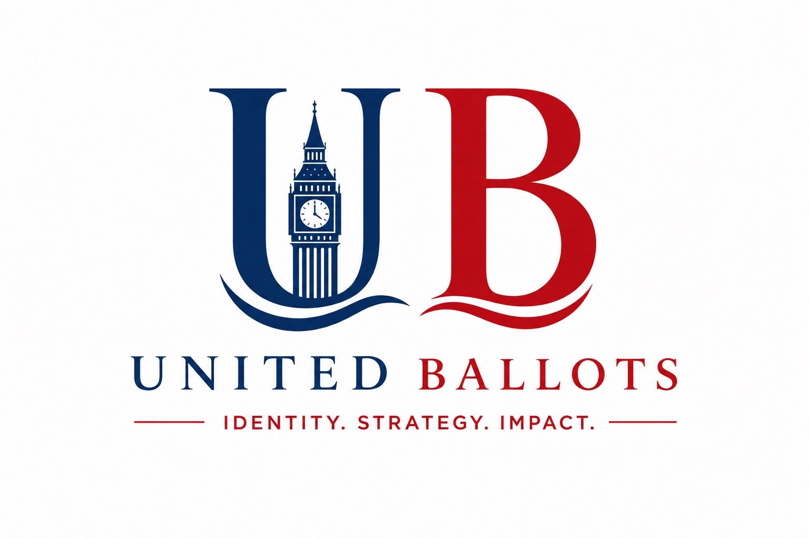
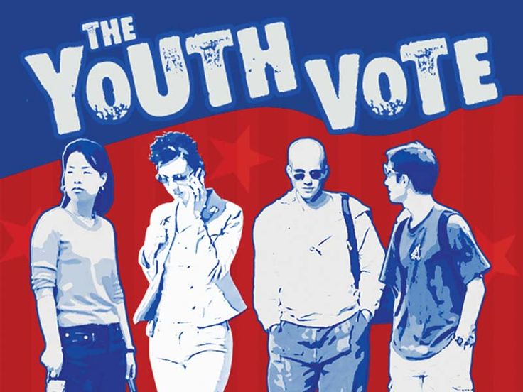
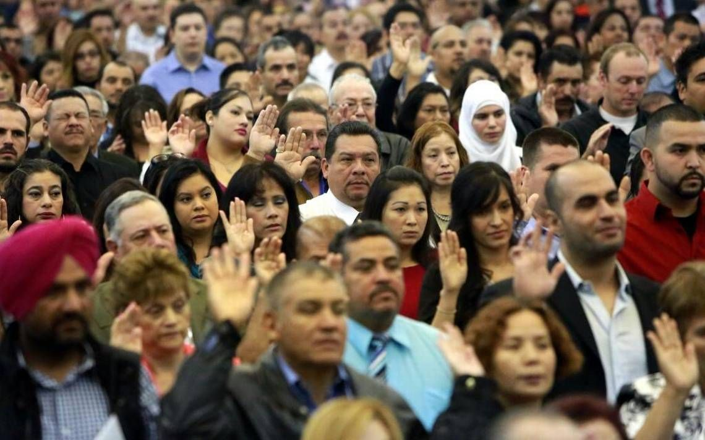
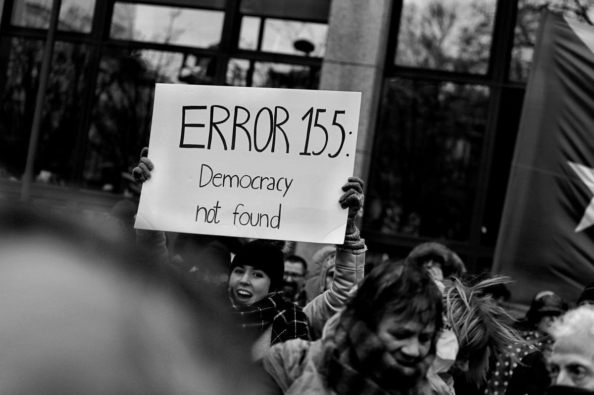

Insights
The Missing Millions
Why Young Voters Are Walking Away From British Elections
Read Article →Every election begins with a manifesto. Every victory begins with an identity. United Ballots helps political leaders discover who they are, define what they stand for and communicate it with clarity, credibility and purpose.

Across Britain, talented councillors, aspiring parliamentary candidates, mayors and public leaders work tirelessly to improve their communities.
Yet many still struggle to answer the simplest question every voter silently asks:
At United Ballots, we believe elections are not won by the loudest voice or the biggest campaign budget. They are won when people believe in the person behind the policies.
Through authenticity. Through clarity. Through consistency. Through trust.
Political leaders must communicate who they genuinely are, rather than performing a version of themselves.
People should understand what a leader stands for, why they stand for it and what it means for their community.
Trust grows when identity, strategy and communication remain aligned across every conversation and every channel.
British politics has entered a new era. Voters are more informed, more sceptical and more demanding than ever before.
Young voters consume politics through short videos before they ever read a manifesto. Communities expect transparency instead of rehearsed soundbites.
United Ballots exists to help close that gap — helping leaders communicate their convictions with honesty, confidence and purpose.
Discover the values, experiences and purpose behind the political leader.
Transform personal values and purpose into an authentic political identity.
Build a clear position that connects the leader to the people they serve.
Create consistent messaging across media, campaigns and digital platforms.
Turn strategy into action and measurable public engagement.
Build public confidence beyond election day.
Our services are designed around one central belief: People vote for people before they vote for policies.
Building authentic political identities through research, narrative strategy, media communication and long-term public engagement.
Explore Service →From campaign planning and constituency strategy to manifesto drafting and voter outreach, we transform ambition into organised action.
Explore Service →Making complex policy understandable, persuasive and relevant to decision-makers, stakeholders and communities.
Explore Service →Helping political leaders meaningfully engage Britain's next generation through research, dialogue and democratic participation.
Explore Service →Our approach has been tested in a live UK election campaign, where our founder led personal branding, positioning and narrative strategy for Cllr Ranjeet Singh Rathore's 2026 council campaign.
Following an earlier defeat in the same ward, the campaign culminated in a clear majority victory.
A clear political identity can become a decisive advantage when combined with disciplined research, strategic communication and effective campaign execution.
We understand your identity, your electorate and your priorities.
We develop your political identity, positioning and strategic narrative.
We turn strategy into communication, campaigns and public engagement.
We help maintain trust and accountability beyond election day.

“ I didn't set out to build a political consultancy. I set out to understand why people vote.
United Ballots was born from the belief that the best political advice should not only be available after someone has reached a position of influence.
Our mission is not to tell politicians what to believe, but to help them communicate what they already believe in ways that are authentic, credible and impossible to ignore.
We contribute to political debate through original research, opinion essays and strategic analysis.

Why Young Voters Are Walking Away From British Elections
Read Article →

What Devolution Reveals About British Voting Habits
Read Article →Whether you're preparing for your first council campaign, contesting a parliamentary seat, shaping public policy or seeking to reconnect with your community, United Ballots is ready to help.
Start a Conversation